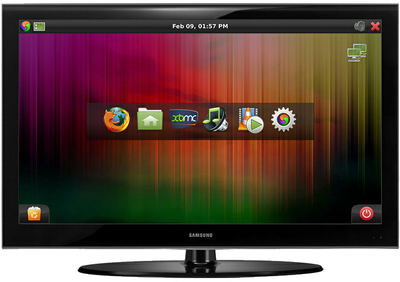

Element HTPC
Archivierte Anleitung
Dieser Artikel wurde archiviert, da er - oder Teile daraus - nur noch unter einer älteren Ubuntu-Version nutzbar ist. Diese Anleitung wird vom Wiki-Team weder auf Richtigkeit überprüft noch anderweitig gepflegt. Zusätzlich wurde der Artikel für weitere Änderungen gesperrt.

ElementHTPC  war eine Xubuntu-basierte Multimedia-Distribution, die für den Anschluss an einen Fernsehbildschirm optimiert ist (ein sogenanntes 10-foot user interface, 10 Fuß gleich 3 Meter Abstand zum Bildschirm). Die Schriftart und die Symbole sind entsprechend vergrößert. Das Konzept die wichtigsten Knöpfe (Menü, Desktop anzeigen, Datum/Uhrzeit, Lautstärke, Programme schließen, Mülleimer, System herunterfahren) in den Ecken zu platzieren wurde stark ausgebaut und die Xfce-Oberfläche auf das nötigste reduziert. In der Mitte sind die wichtigsten Programme in einer angepassten wbar (ebar genannt) in der Mitte des Desktops platziert.
war eine Xubuntu-basierte Multimedia-Distribution, die für den Anschluss an einen Fernsehbildschirm optimiert ist (ein sogenanntes 10-foot user interface, 10 Fuß gleich 3 Meter Abstand zum Bildschirm). Die Schriftart und die Symbole sind entsprechend vergrößert. Das Konzept die wichtigsten Knöpfe (Menü, Desktop anzeigen, Datum/Uhrzeit, Lautstärke, Programme schließen, Mülleimer, System herunterfahren) in den Ecken zu platzieren wurde stark ausgebaut und die Xfce-Oberfläche auf das nötigste reduziert. In der Mitte sind die wichtigsten Programme in einer angepassten wbar (ebar genannt) in der Mitte des Desktops platziert.
Als Login-Manager wird Slim und für die Verbindung der Network-Manager verwendet. Über Xfce Startbefehle oder einen modifizierten Xfce AppFinder lassen sich alle übrigen Programme aufrufen.
| optimale Systemvoraussetzungen | |||
| Prozessor | RAM | Festplatte | Videotreiber |
| >1,6 Ghz | >1024 MB | >20 GB | ändern für HD |
Hinweis:
Das hier beschriebene ElementHTPC Version 1.4 basiert auf Xubuntu 9.10 Karmic Koala, dessen Unterstützung im April 2011 eingestellt wird.
Programme¶
Vorinstalliert sind:
XBMC (alternativ werden Archiv/Moovida oder Boxee
empfohlen)Transmission BitTorrent
Firefox (ebenfalls stark modifiziert mit Zoom-Erweiterung und Cooliris
)
Zudem werden Links auf

im Menü angeboten. Der Adobe Flash Player und Codecs aus Archiv/Medibuntu sind vorinstalliert. Über Synaptic lassen sich jedoch alle darüber hinaus gewünschten Programme aus den Paketquellen nachinstallieren. Mit Jockey können proprietäre Treiber nachinstalliert werden. Über die Spracheinstellungen kann das System auf Deutsch umgestellt werden.
- Erstellt mit Inyoka
-
 2004 – 2017 ubuntuusers.de • Einige Rechte vorbehalten
2004 – 2017 ubuntuusers.de • Einige Rechte vorbehalten
Lizenz • Kontakt • Datenschutz • Impressum • Serverstatus -
Serverhousing gespendet von